研究领域
三维计算机视觉、自由立体显示、环境感知、模式识别等技术的理论研究与实际应用
教育背景
-
博士，信息学专业
毕业论文: Dense and Globally Consistent Multi-View Stereo
-
硕士，通信与信息系统专业
吉林大学，导师：王世刚 教授
毕业论文: 立体元图像编码的研究
-
学士，通信工程专业
吉林大学
毕业论文: 立体视频对象提取技术研究
科研项目
-
北京控制与电子技术研究所横向课题
XXXXXX
XXXXXX, 55万元, 负责人
-
国家自然科学基金面上项目
面向裸眼3D内镜的单目体腔视频动态光场生成研究
62271226, 54万元, 负责人
-
吉林省自然科学基金面上项目
医学图像三维光场显示高分辨率内容生成技术研究
20220101104JC, 10万元, 负责人
-
装备重大基础研究项目校内子项目
视觉XXXX技术
XXXXXX, 45万元, 负责人
-
吉林大学青年师生交叉学科培育项目
基于混合镜头组与双模态情感计算的儿童孤独症谱系障碍辅助诊断系统
415010300076, 2万元, 负责人
-
中航工业沈飞所横向课题
XXXX技术开发与验证
XXXXXX, 67万元, 负责人
-
中航工业沈飞所横向课题
XXXX技术开发与验证
XXXXXX, 64万元, 参加人
-
国家自然科学基金青年项目
面向视频场景光场显示的边缘驱动与模糊理论联合视图生成研究
61901187, 28万元, 负责人
-
吉林大学“励新优秀青年教师培养计划”（重点培养阶段）
18万元, 负责人
-
吉林省教育厅科学研究项目
三维重建与视点绘制互益融合的动态光场显示内容生成研究
JJKH20211094KJ, 2.5万元, 负责人
-
XXX装备预研项目
XXXXXX
XXXXXX, 60万元, 负责人
-
国家重点研发计划项目课题
LED真三维集成成像显示技术研究
2017YFB0404804, 354万元, 参加人
-
吉林省省校共建计划专项（战略性新兴产业培育类）
高密度小间距LED大屏幕真三维集成成像显示系统
SXGJXX2017-7, 300万元, 参加人
-
吉林省科技发展计划项目（重点高新）
大数据环境中现实场景智能视频分析监控技术的研究
20150204006GX, 26万元, 参加人
-
长春市科技发展计划项目重大科技公关项目
自由立体多视点LED全彩色大屏幕显示系统
14KG007, 25万元, 参加人
-
戴姆勒股份公司横向课题
Scene Flow with Online Calibration
1059249581, 参加人
-
戴姆勒股份公司横向课题
Dense Stereo With Intrinsic Calibration
1059241901, 参加人
获奖情况
-
吉林省技术发明奖一等奖
超高密度小间距LED真三维光场显示系统与光场内容生成关键技术
王世刚，郑喜凤，顾开宇，赵岩，韦健，王瑞光，陈宇，魏厚伟，王华波，武伟，祝宇鸿，吕源治，李鹤楠，李天舒
-
吉林省“互联网+”大学生创新创业大赛铜奖
情绪电眼：智能化情绪评估系统
指导教师：陈立，贾勇，韦健，尹铁岩
兼职情况
-
中国图象图形学学会（CSIG）图像应用与系统集成专业委员会委员
-
中国图象图形学学会（CSIG）三维成像与显示专业委员会委员
教授课程
-
-
-
-
-
-
-
医学影像诊断与智能分析处理（创新创业教育课程建设项目）
选修，跨专业本科生
代表性论文
-
Efficiently Enhancing Co-Occurring Details While Avoiding Artifacts for Light Field Display
Applied Optics 59(21):6315-6326, 2020
Jian Wei, Shigang Wang, Yan Zhao, Meilan Piao, Chenxi Song
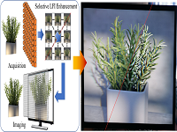
-
Robust Multidepth Object Encryption Based on a Computer-Generated Hologram with a Cascaded Structure
Applied Optics 58(36):9921-9930, 2019
Meilan Piao, Shigang Wang, Yan Zhao, Jian Wei, Yu Zhao, Nam Kim
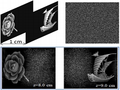
-
Video-Based, Occlusion-Robust Multi-View Stereo Using Inner-Boundary Depths of Textureless Areas
International Conference on Acoustics, Speech, and Signal Processing (ICASSP), 2019
Jian Wei, Shigang Wang, Yan Zhao
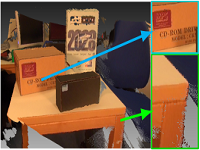
-
3D View Image Reconstruction in Computational Integral Imaging Using Scale Invariant Feature Transform and Patch Matching
Optics Express 27(17):24207-24222, 2019
Henan Li, Shigang Wang, Yan Zhao, Jian Wei, Meilan Piao
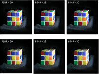
-
Synthetic Aperture Integral Imaging Using Edge Depth Maps of Unstructured Monocular Video
Optics Express 26(26):34894-34908, 2018
Jian Wei, Shigang Wang, Yan Zhao, Meilan Piao
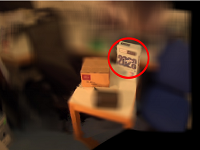
-
Performance Metric and Objective Evaluation for Displayed 3D Images Generated by Different Lenslet Arrays
Optics Communications 426:635-641, 2018
Wei Wu, Shigang Wang, Meilan Piao, Yan Zhao, Jian Wei
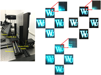
-
Dense and Scalable Reconstruction from Unstructured Videos with Occlusions
International Symposium on Vision, Modeling and Visualization (VMV), 2017
Jian Wei, Benjamin Resch, Hendrik P. A. Lensch
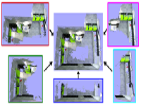
-
Real Time Direct Visual Odometry for Flexible Camera Rigs
Asian Conference on Computer Vision (ACCV), 2016
Benjamin Resch, Jian Wei, Hendrik P. A. Lensch
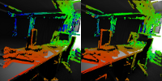
-
Dense and Occlusion-Robust Multi-View Stereo for Unstructured Videos
Conference on Computer and Robot Vision (CRV), 2016
Jian Wei, Benjamin Resch, Hendrik P. A. Lensch
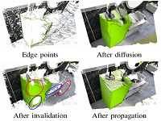
-
Multi-View Depth Map Estimation with Cross-View Consistency
British Machine Vision Conference (BMVC), 2014
Jian Wei, Benjamin Resch, Hendrik P. A. Lensch
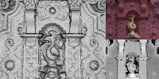
-
Hierarchical Prediction Structure for Subimage Coding and Multithreaded Parallel Implementation in Integral Imaging
Applied Optics 50(12):1707-1716, 2011
Jian Wei, Shigang Wang, Yan Zhao, Fushou Jin
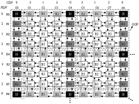
其它论文
-
Wide-Baseline View Synthesis for Light-Field Display Based on Plane-Depth-Fused Sweep Volume
Displays 79:102503, 2023
Chenxi Song, Shigang Wang, Jian Wei, Yan Zhao, Rui Zhang
-
Knowledge and Data Co-Driven Intelligent Assessment of Chinese Zither Fingerings for Chinese Zither Performing
Displays 78:102442, 2023
Wenting Zhao, Shigang Wang, Yan Zhao, Jian Wei, Tianshu Li
-
骨骼平面显示与集成成像手势交互联动系统
计算机工程与应用 59(19):285-293, 2023
韦健, 郭校源, 籍风磊, 郭绍源, 胡笑含, 贾勇, 王世刚
-
Self-Designed Hierarchical Network Based Hand Shape Intelligent Recognition and Evaluation for Chinese Zither Performing
Displays 76:102291, 2023
Wenting Zhao, Shigang Wang, Yan Zhao, Jian Wei, Tianshu Li, Rui Zhang
-
Nonpharmacological Interventions for Subthreshold Depression in Adults: A Systematic Review and Network Meta-analysis
Psychiatry Research 317:114897, 2022
Rendong He, Jian Wei, Kexin Huang, Haiqi Yang, Yuanxin Chen, Zixin Liu, Linya Ma, Yong Jia, Li Chen
-
基于单目视觉的车辆屏显式封闭驾驶舱前视视野重现方法
吉林大学学报（工学版）, 2022
王海涛, 刘慧卓, 张学永, 韦健, 郭校源, 肖俊哲
-
Adaptive Amplification of Image Texture Boundaries
International Conference on Graphics and Image Processing (ICGIP), 2022
Jian Wei, Jiaqi Guo, Guolan Ma, Jingyan Wei, Qi Wang, Shigang Wang, Yan Zhao, Xuejun Wang
-
Synchronous Gesture Interaction for Flat-Panel+Integral Imaging
Digital Holography & 3-D Imaging, 2022
Jian Wei, Jiaqi Guo, Xiaoyuan Guo, Yong Jia, Qi Wang, Shigang Wang
-
3D Holoscopic Image Compression Based on Gaussian Mixture Model
IEEE Transactions on Multimedia 25:1374-1389, 2022
Jianjun Sun, Yan Zhao, Shigang Wang, Jian Wei
-
4D Epanechnikov Mixture Regression in Light Field Image Compression
IEEE Transactions on Circuits and Systems for Video Technology 32(6):3906-3922, 2022
Boning Liu, Yan Zhao, Xiaomeng Jiang, Shigang Wang, Jian Wei
-
基于卷积编解码网络的自由感应衰减信号提取方法
实验技术与管理 39(1):59-65, 2022
王琦, 杜海龙, 陈玫玫, 韦健
-
3-D Epanechnikov Mixture Regression in Integral Imaging Compression
Journal of Visual Communication and Image Representation 81:103332, 2021
Boning Liu, Yan Zhao, Xiaomeng Jiang, Shigang Wang, Jian Wei
-
Image Compression Based on Gaussian Mixture Model Constrained Using Markov Random Field
Signal Processing 183:107990, 2021
Jianjun Sun, Yan Zhao, Shigang Wang, Jian Wei
-
Large-Scale Elemental Image Array Generation in Integral Imaging Based on Scale Invariant Feature Transform and Discrete Viewpoint Acquisition
Displays 69:102025, 2021
Henan Li, Shigang Wang, Yan Zhao, Jian Wei, Meilan Piao
-
结合相机阵列选择性光场重聚焦的显著性检测
中国光学 14(3):587-595, 2021
冯洁, 王世刚, 韦健, 赵岩
-
Minimum Fuzzy Divergence Based Image Cosegmentation
Optoelectronic Imaging and Multimedia Technology VII, 2020
Xuesong Zhao, Shigang Wang, Jian Wei, Chenxi Song
-
Multi-View Image Enhancement for Attention-Guiding Autostereoscopic Display
Digital Holography & 3-D Imaging, 2020
Jian Wei, Shigang Wang, Yan Zhao, Meilan Piao, Chenxi Song
-
光场内容采集与LED集成成像显示系统
中国科技成果 20(11):59-61, 2019
韦健, 王世刚, 赵岩, 武伟, 李鹤楠, 李天舒, 高阳
-
Fatigue State Detection Based on Multi-Index Fusion and State Recognition Network
IEEE Access 7:64136-64147, 2019
Yingyu Ji, Shigang Wang, Yan Zhao, Jian Wei, Yang Lu
-
Depth from Efficient Combination of Local Cues for Flexible-Sensing Autostereoscopic Display
Digital Holography & 3-D Imaging, 2019
Jian Wei, Shigang Wang, Yan Zhao, Meilan Piao
-
A New Method to Expand the Showing Range of a Virtual Reconstructed Image in Integral Imaging
International Conference on Image and Graphics (ICIG), 2019
Lizhong Zhang, Shigang Wang, Jian Wei
-
Static Image Facial Expression Recognition Based on Separability Assessment of Discrete SepInarable Shearlet Transform
Journal of Electronic Imaging 28(2):021006-1:14, 2019
Yang Lu, Shigang Wang, Wenting Zhao, Yan Zhao, Jian Wei
-
Hole Filling Algorithm for Image Array of One-Dimensional Integrated Imaging
Proc. SPIE 11187, Optoelectronic Imaging and Multimedia Technology VI, 2019
Yixue Han, Shigang Wang, Jian Wei, Chenxi Song
-
Eye and Mouth State Detection Algorithm Based on Contour Feature Extraction
Journal of Eletronic Imaging 27(5):051205-1:8, 2018
Yingyu Ji, Shigang Wang, Yang Lu, Jian Wei, Yan Zhao
-
蜂窝式立体元图像阵列的生成
吉林大学学报（工学版） 48(1):290-294, 2018
武伟, 王世刚, 赵岩, 韦健, 钟诚
-
Eye State Analysis Algorithm Based on a Weighted Color Difference Matrix
International Conference on Graphics and Image Processing (ICGIP), 2018
Yingyu Ji, Shigang Wang, Yan Zhao, Jian Wei, Yang Lu
-
A Novel Approach of Facial Expression Recognition Based on Shearlet Transform
IEEE Global Conference on Signal and Information Processing (GlobalSIP), 2017
Yang Lu, Shigang Wang, Wenting Zhao, Yan Zhao, Jian Wei
-
基于Maya的立体元图像阵列的生成
吉林大学学报（工学版） 47(4):1314-1320, 2017
武伟, 王世刚, 王宏志, 赵岩, 钟诚, 韦健
-
基于人类深度感知的立体图像质量评价方法
中国图象图形学报 9:1758-1762, 2011
东野升云, 王世刚, 韦健, 陈丽伟, 吕源治
-
Multi-Object Tracking Based on Multi-Feature Fusion with Adaptive Weights
IET International Communication Conference on Wireless Mobile & Computing (CCWMC), 2009
Liwei Chen, Shigang Wang, Jian Wei
-
Multi-View Video Coding with Adaptive Selection of Prediction Mode Based on Hierarchical B Picture
IET International Communication Conference on Wireless Mobile & Computing (CCWMC), 2009
Jian Wei, Shigang Wang, Liwei Chen
-
Automatic Segmentation of Video Object Under Static Background
WRI World Congress on Computer Science and Information Engineering (CSIE), 2009
Liwei Chen, Shigang Wang, Jian Wei, Tianxiao Guan
-
Adaptive Stereo Video Object Segmentation Based on Depth and Spatio-Temporal Information
WRI World Congress on Computer Science and Information Engineering (CSIE), 2009
Jian Wei, Shigang Wang, Liwei Chen, Tianxiao Guan
-
Research on Disparity and Background-Based Object Segmentation in Stereo Video
IEEE International Joint Conferences on Computer, Information, and Systems Sciences, and Engineering (CISSE), 2008
Tianxiao Guan, Shigang Wang, Hexin Chen, Jian Wei, Liwei Chen
授权专利（中国专利略）
-
LED-Based Integral Imaging Display System as Well as Its Control Method and Device
美国专利, 专利号：US 10560687 B2, 02/11/2020
Shigang Wang, Wei Wu, Jian Wei, Yan Zhao, Meilan Piao, Tianshu Li, Henan Li, Lizhong Zhang, Bowen Jia